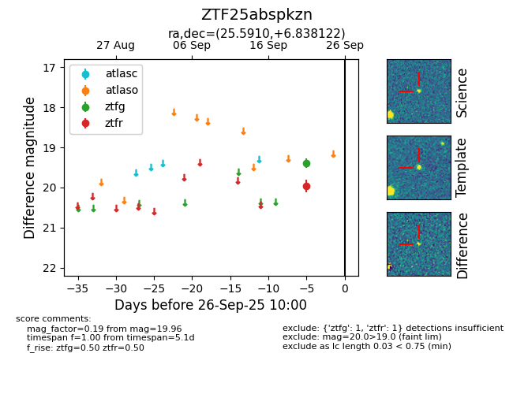

FINK: ZTF25abspkzn
Lasair: ZTF25abspkzn
ALeRCE: ZTF25abspkzn
ZTF25abspkzn (ztf,fink)
equatorial (ra, dec) = (25.5910,+6.83812)
galactic (l, b) = (144.7139,-53.86595)

last ztfg=19.39, ztfr=19.96
1 ztfg, 1 ztfr detections